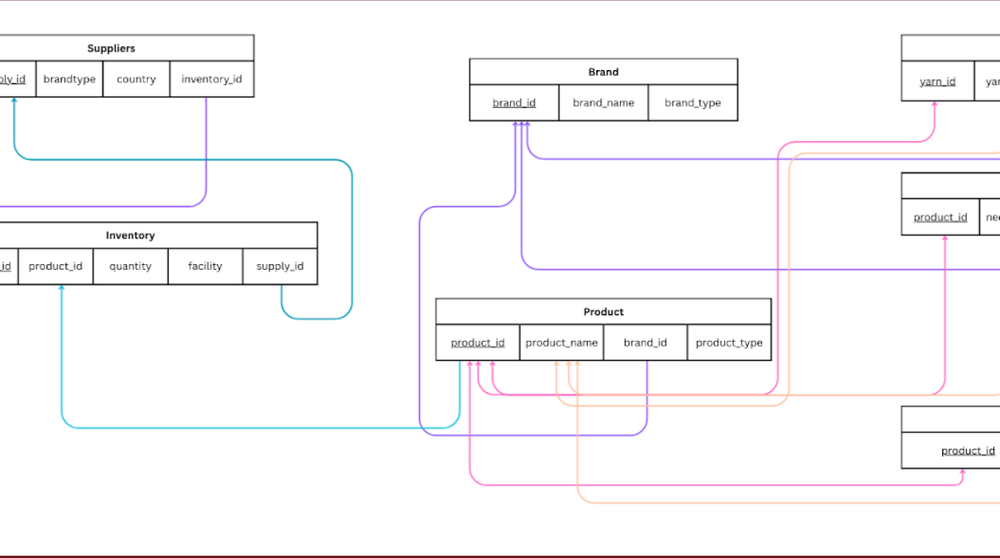

Hello, my name is
Carol Garcia
I'm a eager student ready to learn
Passionate about building and being part of meaningful projects.
Download Resume

Passionate about building and being part of meaningful projects.
Notre Dame of Maryland University
B.S. Computer Information Systems
Minor in Business
Expected Graduation: May 2027
I am passionate about technology and enjoy exploring different areas within the tech industry, especially data analysis, business processes, and problem-solving. I am particularly interested in how technology supports business decision-making, improves efficiency, and drives innovation across organizations. Through coursework and personal projects, I have continued developing my technical skills while gaining hands-on experience working with databases, programming, and web technologies.
I enjoy learning new tools, taking on challenges, and finding creative ways to improve and build meaningful projects that align both technical solutions and real-world business needs. As I continue growing professionally, I hope to further strengthen my skills and discover opportunities where I can contribute to impactful, business-driven technology solutions.

• Used open student depression dataset to understand and analyze depression levels among students.
• Utilized Python to create visualizations (graphs/charts) to identify relationships between lifestyle factors, academic pressure, and depression levels.
• Cleaned and organized the data to ensure accuracy and to support understanding of key trends.

• Designed and developed a full-stack e-commerce prototype using HTML, CSS, JavaScript (front end) and Python with Flask (back end)
• Implemented secure login system with token expiration and session validation to control user access.
• Built interactive front-end features including product browsing, add-to-cart functionality, and checkout workflow.

• Designed and implemented a relational database to manage knitting products, including yarn, needles, accessories, and suppliers.
• Created and populated database tables using SQL to store product details such as price, size, weight, yardage, and inventory levels.
• Wrote SQL queries to retrieve and analyze data, including tracking inventory and identifying cost- effective products.
• Developed a web-based security service platform to allow users to view services, submit bookings, and communicate with the company.
• The system stores and manages user accounts, service bookings, and reviews in a centralized database for efficient data handling.
• Designed a structured system using HTML, CSS, JavaScript, Python (Flask), and MariaDB for efficient data storage and user experience.

HTML

CSS

JavaScript

Python

SQL

Microsoft Office

Google Workspace